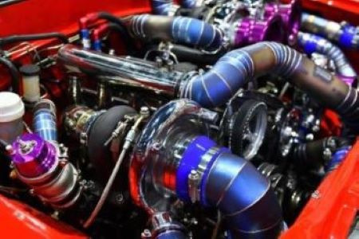
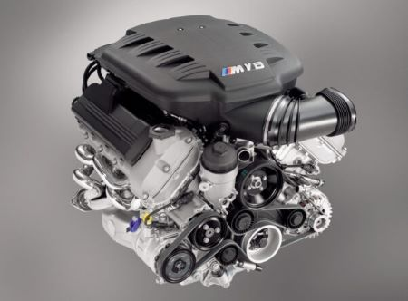

Entenda as diferenças e características dos motores turbo e aspirados.
Os carros turbo utilizam turbocompressores para aumentar a potência do motor. O turbocompressor força mais ar para dentro da câmara de combustão, permitindo que mais combustível seja queimado, o que resulta em mais potência.
Vantagens:
Desvantagens:
Os carros aspirados, também conhecidos como motores naturalmente aspirados, não utilizam turbocompressores. Eles dependem da pressão atmosférica para encher a câmara de combustão com ar.
Vantagens:
Desvantagens:
Escolher entre um carro turbo ou aspirado depende das suas necessidades e preferências. Se você busca desempenho e eficiência, um carro turbo pode ser a melhor escolha. Por outro lado, se você prefere simplicidade e menor custo de manutenção, um carro aspirado pode ser mais adequado.